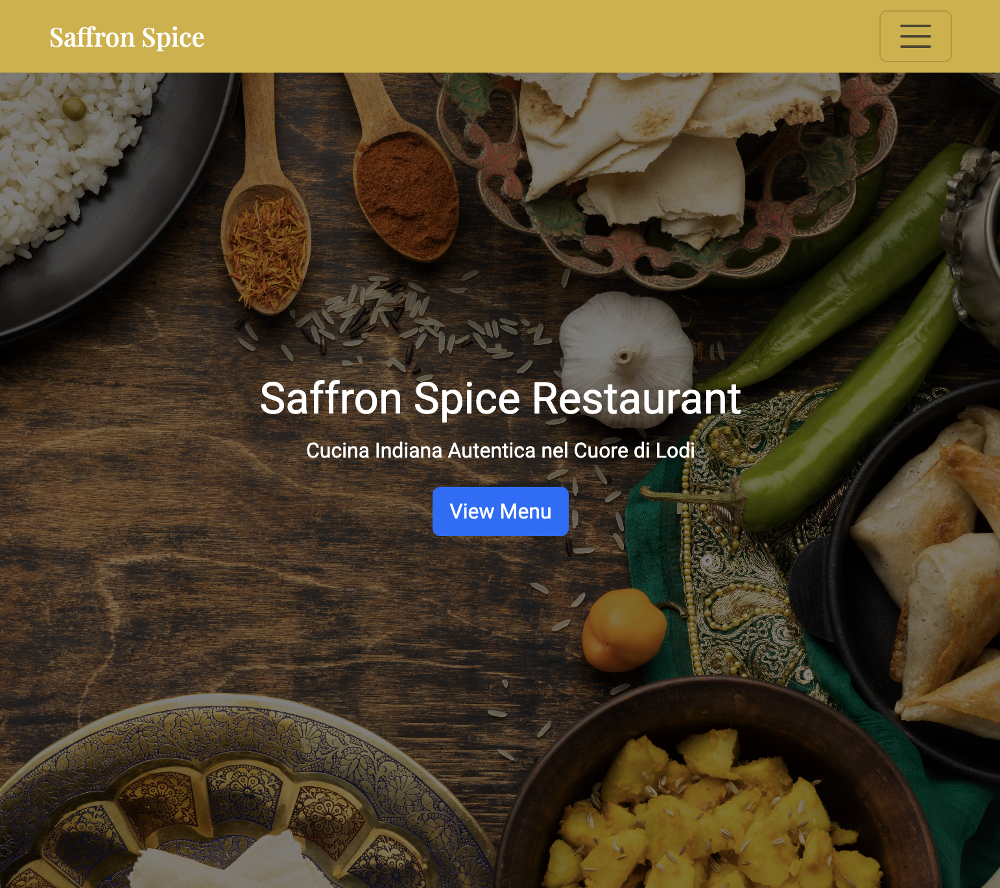
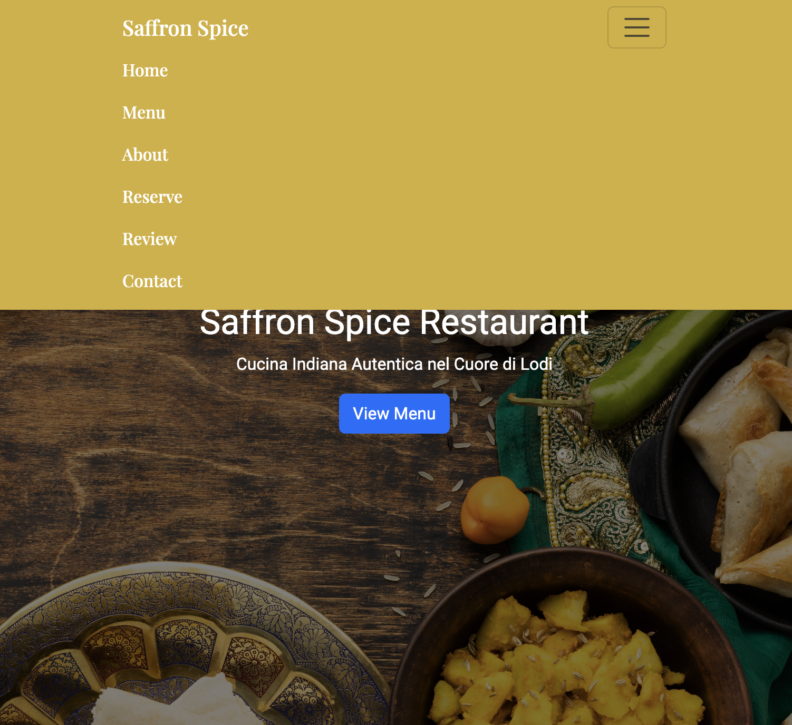
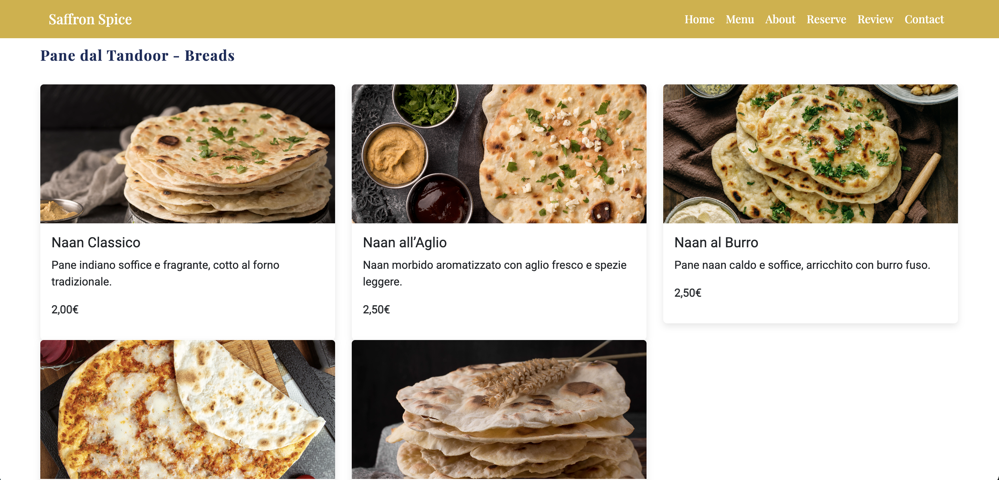

Saffron Spice – Indian Restaurant Website
By Sanya Arora
Web Communication Exam – UNIMI 30.01.2026

The Idea
Creating a complete and modern web presence for an Indian fine-dining
restaurant located in Lodi, aimed at presenting:
- The restaurant
identity and atmosphere
- A structured and elegant menu
-
Practical information (location, opening hours, contacts)
- Online
table reservation
- A visual style inspired by high-end Italian
restaurant websites
Concept and Visual Identity
The concept combines:
- Royal Blue and Gold color palette
inspired by Indian royal aesthetics
- Elegant typography similar to
Michelin-style Italian restaurants
- Large food photography and
minimal layout
Information Architecture
The website is structured into the following sections:
- Home
(hero, introduction, call to action)
- Menu (categorised dishes
with images and prices)
- About (philosophy, experience,
atmosphere)
- Reservations (validated booking form)
- Contact
& Location (map, hours, newsletter form)

Technologies Used
The project was developed using:
- HTML5 with semantic structure
- CSS3 and Bootstrap 5 for layout and responsiveness
-
JavaScript for:
- Form validation
- Cookie consent banner
- Interactive elements (carousel, navigation)
- Google Fonts
(Playfair Display)

Responsive Design
Bootstrap grid system was used to ensure:
- Correct
visualisation on desktop, tablet and mobile
- Flexible menu cards
and image galleries
- Mobile-friendly navigation bar

User Interaction
Implemented features include:
- Reservation form with JavaScript
validation
- Newsletter subscription form
- Cookie consent
banner compliant with GDPR
- Image carousel for dishes
Development Process
Steps followed:
- Color palette and typography selection
-
HTML structure creation
- Bootstrap integration
- Custom CSS
styling
- JavaScript enhancements
- Testing and validation
Future Developments
Possible future extensions:
- Multilingual support (Italian /
English)
- Customer review section
- SEO optimization
Lessons Learned
Through this project I improved:
- Semantic HTML structuring
- Responsive layout design with Bootstrap
- Visual hierarchy
and UI consistency
- Integration of JavaScript into real use cases
- Organization of a complete web project for a professional client
scenario